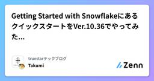
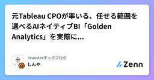
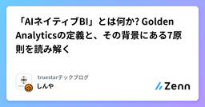

truestarテックブログのフィード
https://zenn.dev/p/truestar
株式会社truestar のメンバーが発信するテックブログです。 技術的な活動やイベント登壇などを発信していきます。
フィード

Getting Started with SnowflakeにあるクイックスタートをVer.10.36でやってみた - 前編 -
truestarテックブログのフィード
前書き初めまして。株式会社truestarの和田です。弊社の研修ではSnowflakeを扱っておりまして、最初のステップとしてGetting Started with Snowflakeというガイドを利用させていただいています。こちらのガイドは、2025年12月20日を最後に更新が止まっており、2026年10月現在取り組もうとすると、UIが大きく変わってしまっているようです。それもそのはず、Snowflakeはユーザー体験向上のためにかなり高頻度でアップデートしてくださっています。試しに見てみたところ、2026年10月に入ってから20日までだけで45件の更新ノートが確認され...
1日前

元Tableau CPOが率いる、任せる範囲を選べるAIネイティブBI「Golden Analytics」を実際に触ってみた
 1
1
truestarテックブログのフィード
ここ最近、データ分析の領域では「AIネイティブBI」という言葉を目にする機会が増えてきました。従来のBIツールにAI機能を後から足すのではなく、最初からAIが分析の中心にいることを前提に作られたBIツールのことです。これまで公式情報や動画、Webinarを通じて追いかけてきたAIネイティブBI「Golden Analytics」。このサービスは「The Slider of Autonomy(自律度スライダー)」という考え方に基づいて作られていて、「AIにどこまで任せるか」をユーザーが段階的に選べるようになっています。AIを「オンかオフか」の二択にするのではなく、完全に手で作るところか...
2日前

データを可視化するだけでは伝わらない？ Tableauで学んだコミュニケーション
truestarテックブログのフィード
はじめに初めまして、ユキです。初めての投稿は、ちょっと緊張していますが、まだ未熟な部分もあり、温かく見守っていただければ、幸いです。よろしくお願いいたします。 TableauとはTableau は、データに基づく課題解決の形を変革し、人や組織がデータを最大限に活用できるように支援するビジュアル分析プラットフォームです。 Tableauを通じて、どのような課題を解決できるのかTableauを通じて、様々な課題を解決できますが、具体的にいうと、データを可視化すること、現状を把握して傾向を発見すること、意思決定・行動につなげることなど、異なる場面に応じて活用できる...
2日前

Snowflake CoCo × PODBで、都道府県別の地価推移アプリを作ってみた
truestarテックブログのフィード
こんにちは。株式会社truestarの戒能です。研修の一環で、SnowflakeのAIコーディングエージェント「CoCo」を使って、都道府県別の地価ダッシュボードを作ってみました。今回使用したデータは、truestarが提供しているオープンデータバンク「Prepper Open Data Bank（PODB）」内にある地価公示データです。SQLもPythonもまだ勉強中の私が、CoCoにどこまで任せられるのか、どこまで完成度の高いダッシュボードを作れるのかを中心に紹介します。 CoCoとはCoCoは、Snowflakeに組み込まれたAIコーディングエージェントです（正式名称はCo...
2日前

「AIネイティブBI」とは何か? Golden Analyticsの定義と、その背景にある7原則を読み解く 1
truestarテックブログのフィード
はじめにBI製品の紹介で「AIネイティブ」「AI搭載」「エージェント型」「対話型」といった言葉を見かける機会が増えました。どれも似た意味に聞こえますが、実は指しているものが違います。Golden Analyticsは、AIネイティブBIを掲げる分析ツールです。当エントリでは、Golden Analyticsが公式サイトで公開している解説記事「What Is AI-Native BI? A Plain Definition」を軸に、記事中で触れられている関連ドキュメントも合わせて読み、全体像を日本語で整理します。ちなみに下記4つ(いずれも2026年10月21日時点で確認)の...
4日前

What's New in Sigma - 2026年10月09日のSigma Computing関連リリース情報まとめ
truestarテックブログのフィード
Sigma(Sigma Computing)の最新リリースノート情報を集約・要約して紹介しているコミュニティスレッド『Release Notes』。米国時間毎週金曜日中(日本時間土曜日早朝)に定期的に公開されているこちらのスレッドの内容について、個人的情報観測も兼ねて公開されたタイミングで目を通すようにしています。当エントリではこのコミュニティスレッドにおける2026年10月09日付けの投稿について、内容を要約・咀嚼理解したものを紹介します。過去回の内容は、年ごとの一覧記事『What's New in Sigma 〜Sigma Computingの関連リリース情報まとめ(2026...
10日前
SQLレビュー、AIにどこまで任せるのかを考えてみた（Databricksで試した話）
truestarテックブログのフィード
はじめにこんにちはimaiです😸我々の業務では、複数のテーブルを結合・集計し、業務ルールに沿って加工するSQL（いわゆるデータパイプライン）をよく組みます。このレビューにたくさん時間がかかっているのが最近の悩みです。時間がかかる理由は、「この結合で集計の粒度は合っているか」「この区分を除外して業務的に正しいか」といった、業務要件と照らし合わせないと判断できない観点が多いことかなと。なので、AIと人間の役割分担を調べて整理し、最近よく触れているDatabricks上でどう実装できるかを試してみました。Databricksの技術的な話というより、AIレビューで人間との役割をどう切...
10日前
Claude Dashboardsが"一言"でダッシュボードを作る時代、ただし勝負を分けるのは「データ準備」にある
truestarテックブログのフィード
はじめに株式会社truestarの六車です。データコンサルティング会社で、TableauやSnowflake、Dataiku、Sigma等のモダンデータスタックをベースに、お客様のデータ活用を支援しています。先日、Claude Dashboardsのベータ版が公開されましたことを知りSlackの分報で、次のようにつぶやいたところ修正箇所を直接指しながら直接AIに指示してものを作り上げられるのが破壊的に楽なんだよな。代表から即日こんな反応が。このClaude DashboardでもtruestarのSalesforceデータの分析したいです…それならということで...
12日前
Golden Analyticsは何を目指すBIなのか：公式サイトの「Why Golden」と「Product」を読み解く
truestarテックブログのフィード
前回の記事では、元Tableau CPOのFrancois Ajenstat氏が創業したAIネイティブBI『Golden Analytics』について、会社概要から料金、セキュリティ、開発ペースまでをひととおりまとめました。当エントリではその続編として、公式サイトの「Why Golden」と「Product」の内容を見ていきたいと思います。「Why Golden」は製品の考え方を、「Product」は機能を紹介するページです。この2つを読み比べて、Golden Analyticsが「どんな悩みを、どんな機能で解決しようとしているのか」を整理してみました。!本記事は、執筆時点(2...
15日前
【Snowflake｜Aurora MySQL】数億件超の集計基盤比較
truestarテックブログのフィード
こんにちは。s.sumiです。商圏分析GSI「MarketAnalyzer®」などを提供する技研商事インターナショナル株式会社様（以下、GSI様）では、開発中のアプリケーションに向けて、大規模データの集計基盤を検討しています。その一環として、Aurora MySQLとSnowflakeの性能とコストを実測で比較する検証を行い、truestarが技術面からご支援させて頂きましたので、本記事ではGSI様の許可を得て、その結果をご紹介します。開発中のアプリケーションでは、店舗ごとに商圏を設定し、その商圏内の人口や来訪の動きを集計して表示します。この集計処理を既存のAuroraで行うか、Sn...
15日前
What's New in Sigma - 2026年10月02日のSigma Computing関連リリース情報まとめ
truestarテックブログのフィード
Sigma(Sigma Computing)の最新リリースノート情報を集約・要約して紹介しているコミュニティスレッド『Release Notes』。米国時間毎週金曜日中(日本時間土曜日早朝)に定期的に公開されているこちらのスレッドの内容について、個人的情報観測も兼ねて公開されたタイミングで目を通すようにしています。当エントリではこのコミュニティスレッドにおける2026年10月02日付けの投稿について、内容を要約・咀嚼理解したものを紹介します。過去回の内容は、年ごとの一覧記事『What's New in Sigma 〜Sigma Computingの関連リリース情報まとめ(2026...
18日前
What's New in Sigma - 2026年09月25日のSigma Computing関連リリース情報まとめ
truestarテックブログのフィード
Sigma(Sigma Computing)の最新リリースノート情報を集約・要約して紹介しているコミュニティスレッド『Release Notes』。米国時間毎週金曜日中(日本時間土曜日早朝)に定期的に公開されているこちらのスレッドの内容について、個人的情報観測も兼ねて公開されたタイミングで目を通すようにしています。当エントリではこのコミュニティスレッドにおける2026年09月25日付けの投稿について、内容を要約・咀嚼理解したものを紹介します。過去回の内容は、年ごとの一覧記事『What's New in Sigma 〜Sigma Computingの関連リリース情報まとめ(2026...
1ヶ月前
What's New in Sigma 〜Sigma Computingの関連リリース情報まとめ(2026年)〜
truestarテックブログのフィード
Sigma(Sigma Computing)の最新リリースノート情報を集約・要約して紹介しているコミュニティスレッド『Release Notes』。米国時間毎週金曜日中(日本時間土曜日早朝)に定期的に公開されているこちらのスレッドの内容について、個人的情報観測も兼ねて公開されたタイミングで目を通すようにしています。このエントリでは、定期的に公開している日本語記事について、インデックス・履歴として内容を辿れる形にして各記事をまとめています。振り返りや情報整理に参照・活用頂けますと幸いです。 2026年の「What's New in Sigma」記事一覧投稿日扱ったトピック...
1ヶ月前
What's New in Sigma - 2026年09月18日のSigma Computing関連リリース情報まとめ
truestarテックブログのフィード
Sigma(Sigma Computing)の最新リリースノート情報を集約・要約して紹介しているコミュニティスレッド『Release Notes』。米国時間毎週金曜日中(日本時間土曜日早朝)に定期的に公開されているこちらのスレッドの内容について、個人的情報観測も兼ねて公開されたタイミングで目を通すようにしています。当エントリではこのコミュニティスレッドにおける2026年09月18日付けの投稿について、内容を要約・咀嚼理解したものを紹介します。 TL;DR2026年09月18日のSigmaリリースにおける主なトピック、目玉は以下の通り。AIアシスタントによるSigmaへの...
1ヶ月前
[レポート]『Sigma & Snowflake - Future of AI Analytics』に参加してきた
truestarテックブログのフィード
2026年09月16日(水)、SigmaとSnowflakeの共催イベントとなる『Sigma & Snowflake - Future of AI Analytics』が開催されました。Sigma & Snowflake - Future of AI Analytics先日開催されたSigmaユーザー会でも告知されていたこちらのイベント、Sigmaの最新動向も聞けるということで参加してきました。当エントリはそのイベントレポートをお届けしたいと思います。!当エントリのレポートは公開、共有OKのパートのみ記載した形となっております。会場限定のコンテンツに...
1ヶ月前
元Tableau CPOが創業したAIネイティブBI『Golden Analytics』について色々調べてみた
truestarテックブログのフィード
2026年04月、米国で『Golden Analytics』という新しいBIプロダクトがアーリーアクセスとして公開されました。創業者はTableauでChief Product Officer(CPO)を7年以上務めたFrancois Ajenstat氏です。日本語での情報はまだほとんどないので、「AIを後付けするのではなく、AIを中核に据えて設計したBI」というこの製品の主張が、日本でも気になる方の参考になればと思い、色々調べてみることにしました。当エントリでは、2026年9月時点で公開されている一次情報(公式サイト、料金ページ、リリースノート、プレスリリース)と主要メディア...
1ヶ月前
What's New in Sigma - 2026年09月11日のSigma Computing関連リリース情報まとめ
truestarテックブログのフィード
Sigma(Sigma Computing)の最新リリースノート情報を集約・要約して紹介しているコミュニティスレッド『Release Notes』。米国時間毎週金曜日中(日本時間土曜日早朝)に定期的に公開されているこちらのスレッドの内容について、個人的情報観測も兼ねて公開されたタイミングで目を通すようにしています。当エントリではこのコミュニティスレッドにおける2026年09月11日付けの投稿について、内容を要約・咀嚼理解したものを紹介します。 TL;DR2026年09月11日のSigmaリリースにおける主なトピック、目玉は以下の通り。アカウント言語に日本語を含む18言語...
1ヶ月前
PostgreSQL歴1年の人間がSnowflake研修で驚いた4つの違い
truestarテックブログのフィード
はじめにarimoです。データ分析に強い人間になりたいと思い、今回truestarに転職をしました。そして、現在Snowflakeの研修を受けています。前職では、1年ほどPostgreSQLを触っており、また自己学習としてPythonを勉強していました。データ構築の基礎的な知識はあったので、Snowflakeもきっと触れるだろう！と思っていたのですが、同じSQLでも発想がだいぶ違うなと感じる場面がいくつもありました。PostgreSQLの深い経験があるわけではありませんが、1年間で培った知識と比べて「ここが違う」と思ったポイントを、構成・構文・権限・保管の4つの観点で整理して...
1ヶ月前
超速＆AI経由でサイト移植や作成が出来るAgent Web Platform『Studio.Drop』のβ版機能を色々試してみた
truestarテックブログのフィード
2026年09月01日、Studioから以下のようなアナウンスがありました。「公開中サイトのURLを伝える」「ファイルをアップロード」「自然言語で伝える」ことでサイトを移行、作り上げる事のできるAgent Web Platform『Studio.Drop』というサービスのβ版に関する内容となっています。https://x.com/StudioDesign/status/2094648050732216782直近これまで、所属する株式会社truestarではコーポレートサイト周りの移植をStudio.designで行って来ていました。対象サイトは以下の通り。そんな状況でしたの...
1ヶ月前
[レポート]Sigma って何？ハンズオンで理解しちゃおう！ && 日本の Sigma ユーザーによるLT大会！を開催(<登壇)しました
truestarテックブログのフィード
2026年09月09日(水)、Sigma Computingに関する日本国内における初のユーザー会イベント『Sigma User Community Japan』が開催されました。記念すべき第1回目のコミュニティイベント。私も運営側の立ち位置で関わらせて頂く事ができ、またLT登壇も合わせて行っていましたのでその両面での『開催&登壇レポート』を当エントリではご紹介したいと思います。※当日のX投稿まとめを下記Posfieで作成しています。合わせてご覧頂けますと幸いです。 開催概要イベントページ記載の開催概要は以下の通り。Sigma (https://www.sig...
1ヶ月前